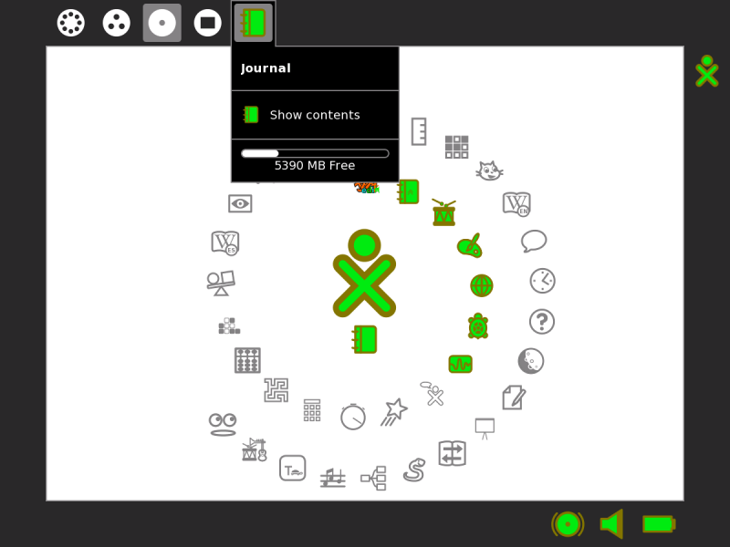
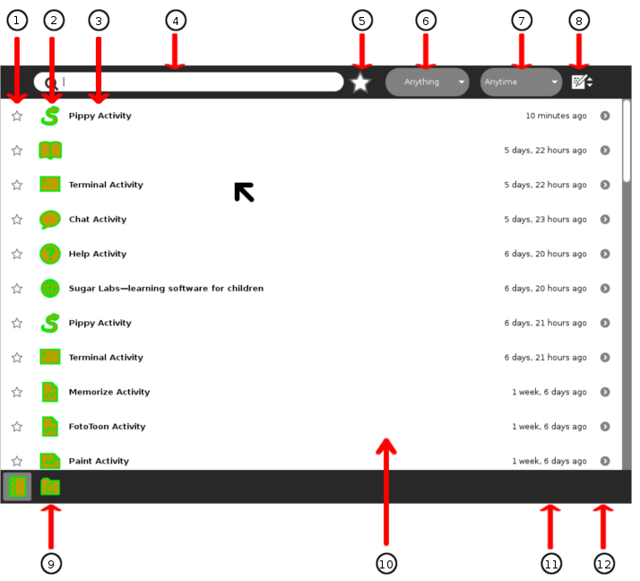
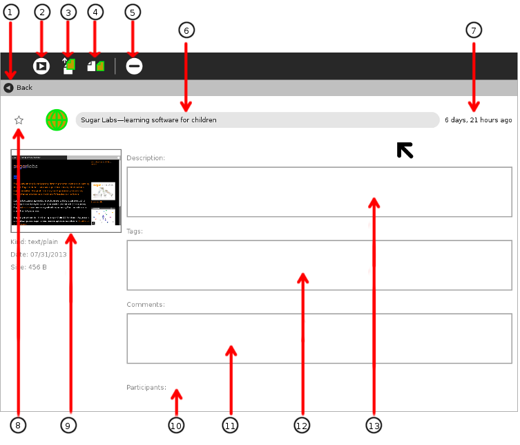
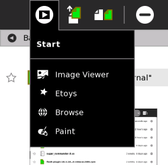
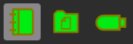
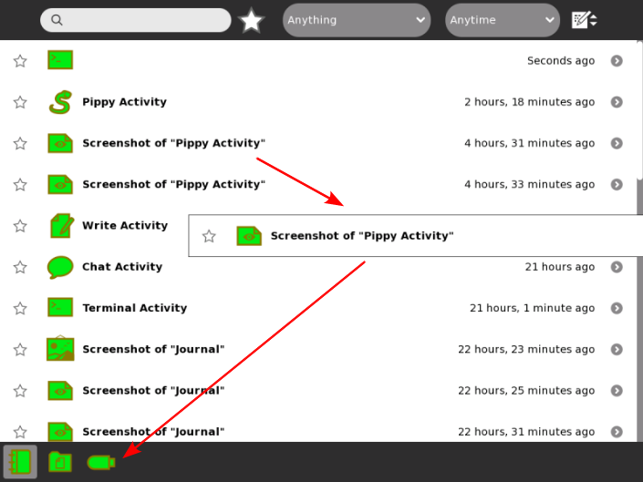
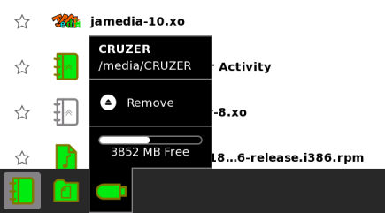
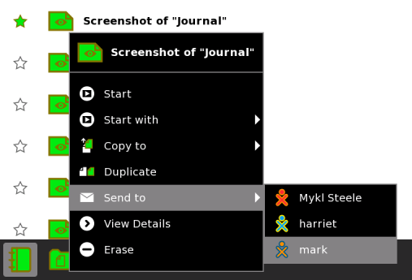

Journal¶
The Journal Activity is an automated diary of everything you do within Sugar. Sugar Activities use the Journal as a place to save your work. You can use the Journal as a place to revisit old work, to resume incomplete work, to organize your completed work, and to reflect upon your progress as a learner.
The Journal keeps a record of what you do and the things your create such as photos, drawings, and writings. You can search for items in the Journal or sort entries by type or date. You can also click an entry to get a detailed view. You can resume an activity by clicking on the icon for that entry.
The Journal also supports external storage media such as a USB device or a SD card. When you plug a USB device into the XO, you can access the contents of the USB device using the Journal. Click the USB icon to see the content on an attached USB storage device. You can also copy information from the Journal onto removable media—such as a USB device—as a means of backing it up. If you are connected to a school server, you can access its backup system.
Accessing the Journal¶

To show the Journal, click the Journal icon on the Frame, or use the F5 key.
On an XO laptop, you can press the magnifying glass key in the top row of the keyboard.
Seen in an Activity, this icon on the Activity toolbar (or Activity tab) allows quick access to the Journal, to add a description, or further notes to yourself about what you are going to do, or have done in that session of the Activity.
Journal features¶

The Journal View contains a menu and a list of journal entries:
1 - Favorite star: You can mark important entries by clicking on the star icon for that entry. When you click the star icon, the star is colored in.
2 - Entry icon: Each Journal entry has an icon. The color of the icon shows who created the entry. For example, if you copy a photo from a friend, the photo’s icon has your friend’s colors. You can launch the Activity for the entry by clicking on the icon. A hover menu may reveal additional options. In particular, “Erase” deletes that entry from your Journal.
3 - Entry name: Each entry has a name. You can edit the name by clicking it.
4 - Search box: Type words in the box to search for entries that match those words. Entries are displayed when they contain all of the typed words. Comparison will be against all of: the entry name field, the description field (see “Journal detail view”), the comments field and the tag field (see “Journal detail view”). Note: A small x button at the right of the box shows that searching is being applied. To cancel your search, click on that x.
5 - Favorites view: Only shows the entries which have been marked as favorites.
6 - Type filter: You can show certain types of Journal entries, e.g. only images or only entries associated with a specific Activity.
7 - Date filter: You can show certain ages of Journal entries, e.g. changed within the past day, week, or month.
8 - Sorting options: You can order Journal entries by their size, creation and modification date.
9 - Documents folder: To exchange files between the Journal and the underlying file system the $HOME/DOCUMENTS folder is available in the Journal. For example: If you have created an image in GIMP under GNOME and want to open it in the Paint Activity you can place it in the $HOME/DOCUMENTS folder and then access it in the Journal.
10 - Buddy icons: If other participants joined you in this Activity, icons in their colors appear here.
11 - Elapsed time: Displays the time since the most recent change to the entry.
12 - Detail view: Click this button to see detailed information about the entry. See “Journal detail view”, below.
Journal Detail view¶

The Detail view appears when you click the Detail view button for an entry. This view lets you examine and annotate the entry.
1 - Back Icon: You can click anywhere in this line to return to the main Journal View.
2 - Resume Button: You can click the Resume button to resume an Activity. A hover menu may show additional options. For example, you can resume working with an image using either the Browser or the Paint Activity.
3 - Copy button: You can copy a Journal entry to the clipboard (or to a removable storage device shown on the bottom edge of the Journal screen) by clicking on the Copy button.
4 - Duplicate button: You can duplicate a Journal entry by clicking on the Duplicate button.
5 - Erase button: You can erase an entry by clicking the Erase button. Caution: Once you erase an entry, it cannot be restored unless you have backed up your Journal.
6 - Entry name: You can change the name of the entry by clicking it and typing in a new name.
7 - Elapsed time: Displays the time since the most recent change to the entry.
8 - Favorites Icon: This icon indicates whether an entry has been starred as a favorite which can be done by clicking it.
9 - Thumbnail image: Each entry has a thumbnail image that is created automatically. The image show the Activity screen when the last change to the Journal entry was saved.
10 - Participants: Displays the XO icons of each person who participated in a shared Activity.
11 - Comments: Comments by the joiners will be displayed here. The comments will be from Portfolio activity and from journal share.
12 - Tags field: You can enter search tags. Tags are keywords used to describe a journal entry so that you can find it later using the Search box. For example, if your project is for school, maybe science class, and it is a report about local flowers, you could put “science” and “flowers” as the tags. You can write as many tags as you wish. You can also use keywords to help you “group” this entry, for instance by origin or context.
13 - Description field: You can type a description of the entry, which you can find later using the Search box. Use a description to remind you of what you did. For example: “Flowers I saw on the hike to the waterfall”. Or you can reflect on your work and process: what I have done; how I have done it; and how successful these efforts have been. “This was not easy, but I learned a lot about different types of flowers in my community by speaking with my family”. This is important because these description can be shown in the reflection Activity called “Portfolio”.

When resuming from the Detail View, you can choose among different Activities.
Using removable media¶

When you insert removable media—such as a USB device or SD card—it appears as an icon on the bottom edge of the main Journal view.
Journal: Click the Journal icon to shows the Journal View.
Documents folder: Click the Documents icon to show the contents of
USB device: Click the USB icon (or SD icon) to show the removable-media file system.

You can drag entries from the Journal onto the Documents folder or removable media (and vice-versa)

To remove (unmount) the external file system, choose Remove on the hover menu.
Caution: It may take time for the hover menu to appear. It is easy to make a mistake and click the icon itself when you intended to click Unmount.
Caution: If you have a Terminal running you may inadvertently have your removable media locked. If this happens, the safest way to remove media is after powering off your computer.
Sending Journal Entries via a Network¶

The Journal allows you to send entries to other people who are using Sugar via a network. In order to do this the receiving user has to be registered as a friend in the Neighborhood View and be online. It does not matter whether the laptops are connected via the Mesh-network, an Ad-Hoc network, an access point, or a server.
Note to parents and teachers¶
The Journal keeps a record of everything a child does within Sugar: which Activities they use and what content they create. It also keeps a record of group Activities, such as participation in a shared Write or Browse session. The Journal encourages reflection. You can refer to it to assess a child’s progress, much in the spirit of “portfolio” assessment. In order to further support this reflection, Sugar offers a Portfolio Activity, an assessment tool that utilizes the journal content. You can reflect on your work: what I have done; how I have done it; and how successful these efforts have been. Then you can create a multimedia presentation to share with your peers, teachers, and parents who can also reflect in return.
You can also use it as a catalyst for discussion with your child or student. We encourage the use of the description field within the detail view of Journal entries as a place to annotate or comment up entries.